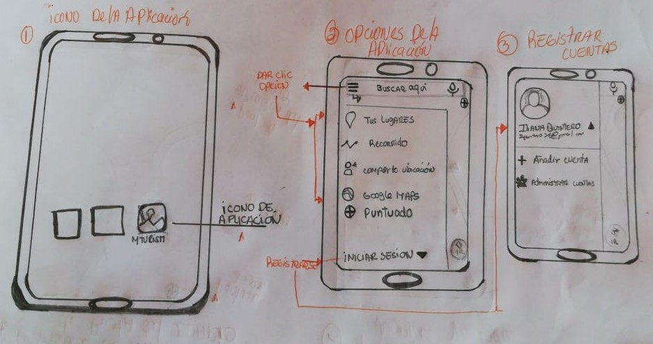
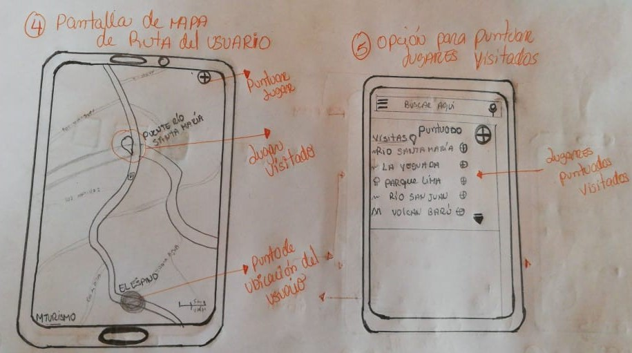

Esta Aplicación tiene opciones, en la pantalla, donde el usuario pueda interactuar y guardar lugares visitados, a través de un icono de puntuado, entre otros ajustes que se explicaran en el boceto.
Se muestra el logo de la aplicación, llamado (MTURISM).
Configuración de la aplicación, en dicha pantalla nos salen 7 opciones, las cuales son:
Buscador: Proporciona más rapidez a la hora de buscar lo que se necesita.
Tus lugares: Opción para registrar, lugares visitados por el usuario.
Recorrido: Muestra el recorrido que ha hecho el usuario.
Compartir Ubicación: Se comparte la ubicación, del lugar exacto en que se encuentra el usuario ubicado.
Google Maps: Vínculo, en el cual el usuario tendrá acceso, donde le permitirá ver el mapa completo.
Puntuado: Se muestran los lugares que el usuario haya puntuando, es decir, lugares que les fueron de gran agrado o que pretende volver a visitar.
Iniciar sesión: Opción para registrarse y tener acceso a todas las opciones anteriores. El usuario debe iniciar sesión. Se puede iniciar sesión, ya sea de una cuenta de Google, o bien crear una.
Al dar clic en Iniciar sesión, se muestra la pantalla donde el usuario debe registrarse, o bien agregar su cuenta, también cuenta con la opción de administrar cuentas.
Muestra el Mapa, en esta pantalla, proporcionara la ruta y la ubicación, donde se encuentra el usuario.
Icono (circulo con signo +), el punteador, este funciona para puntuar el lugar que el usuario visito, es decir se guardara.
Una vez el usuario haya puntuado el lugar, este se mostrará en la pantalla, donde aparecerán otros lugares que fueron puntuados
